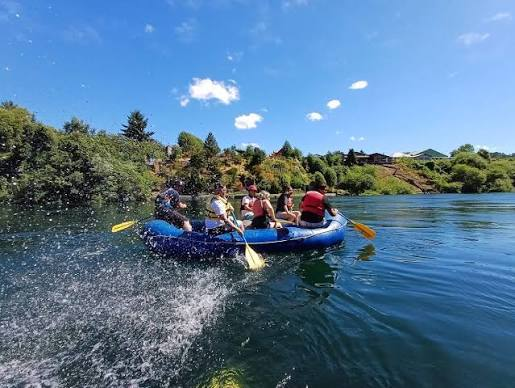

Conoce La Araucanía de forma responsable
Encuentra actividades, rutas y emprendimientos locales para planificar una visita conectada con el territorio.
Explorar actividades
Ideas para tu próxima salida

